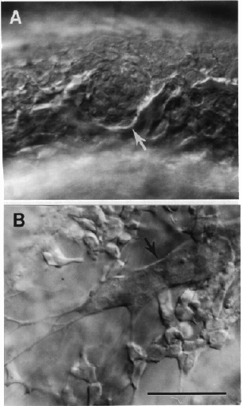

Modified from: Kimmel et al., 1955. Developmental Dynamics 203:253-310. Copyright © 1995 Wiley-Liss, Inc. Reprinted only by permission of Wiley-Liss, a subsidiary of John Wiley & Sons, Inc.
Fig. 26. Cells of the trigeminal placode (arrow in A, the 9-somite stage at 13.5 h) will form sensory neurons of the trigeminal ganglion (arrow in B, 18-somite stage at 18 h). Peripheral axons are visible to the lower left. Left side Nomarski views, dorsal to the top, anterior to the left. The primordium is located dorsolateral to the hindbrain between the optic and otic primordia. Cranial neural crest cells are visible migrating near the trigeminal primordium at both stages. Scale bar: 50 µm.

Figure 26